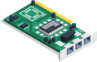

What it is and why it matters?
Industrial 4.0 (I4.0) factory can’t achieve without implement Industrial Internet Of Things (IIOT). Sophic automation provide IIOT solutions help manufacturer execute operation in smarter process, increase operational efficiency while simultaneously decreasing operating costs to improve employee working conditions and manufacturing throughput. With the I4.0 revolution trend, IIOT become standard requirements in industrial solution.
By having devices connected, digitalize operation process, aggregate data in server or computing cloud, remote access information and data analysis are elements to enable IIOT. Sophic Automation Sdn Bhd Manufacturing Lights Off solution analyzes machine operations data to provide predictive maintenance, remote service, connected logistics, and optimize asset performance management to enable industry 4.0 smart factories
What are key reasons to implement IOT?
Improved Operational Efficiency
Monitor and optimize the performance of machines and equipment on the factory floor. Manufacturers can identify inefficiencies and optimize their production processes to reduce waste and increase productivity.
Predictive Maintenance
Condition monitoring of machines and predict when maintenance will be needed before equipment fails allowing for proactive maintenance to be scheduled and thus, reduce unplanned downtime and improve asset utilization.
Gathering Rich Data
Real-time data on manufacturing operations allow for more informed decision-making and faster response times to issues that arise on the factory floor. Problems can be addressed more quickly, improving quality and reducing costs.
Achieve Quality Improvement
Monitor product quality in real-time, allowing manufacturers to identify defects or issues as they arise and make adjustments to improve quality. This can improve product consistency and reduce waste.
Supply Chain Visibility
Greater visibility into the supply chain, allowing manufacturers to track raw materials, finished goods, and shipments in real-time. This can help improve logistics planning, reduce lead times, and improve customer satisfaction.
The 4 Layers of IOT Solutions Architect
The key layer of building blocks for any IoT structure are:
Layer 1
Sensing
This layer involves the deployment of sensors and other data acquisition devices to collect data from physical objects or environments. The sensors may collect data on temperature, pressure, humidity, motion, and other variables.
Layer 2
Connectivity
This layer ensures that the devices are connected to the network and can communicate with each other. It is necessary to aggregate, transmit and process the data collected by the sensor devices to an on-premise or cloud data center.
Layer 3
Processing
This layer is responsible for processing and analyzing the data collected from the IoT devices. It includes cloud-based or edge computing platforms that can perform real-time data processing and analysis, as well as storage and management of data.
Layer 4
Application
This is the layer where users can interact with the IoT system through various applications and interfaces such as dashboards, visualization tools, and other applications that enable users to take actions based on insights gained from the analysis.
Manufacturing Light Off
Manufacturers are looking for ways to increase operational efficiency while simultaneously decreasing operating costs to improve employee working conditions and manufacturing throughput. Sophic Automation Sdn Bhd Manufacturing Lights Off solution analyzes
machine operations data to provide predictive maintenance, remote service, connected logistics, and optimize asset performance management to enable industry 4.0 smart factories.
Environment Monitoring Solutions
Our Outdoor Environmental Real Time Monitoring System is equipped with state-of-the-art IOT sensors capable of delivering a more consistent and accurate data.
Our solutions can be used in a variety of settings, including industrial, commercial, and residential environments to monitor and analyze various aspects of the environment, such as air quality, water quality, soil conditions, and weather patterns.
Overall, it's a critical tool for organizations that are committed to sustainability, and for governments that are responsible for protecting public health and the environment.
The Command Centre
The key component of Industry 4.0 is to have a centralized location where manufacturing operations can be monitored, controlled, and optimized in real-time.
A typical manufacturing command center consists of a large room with multiple computer screens, data visualization tools, and other technology solutions. It allows the people in charge to have a comprehensive view of the manufacturing
operations and access to critical data and information.
The goal of a manufacturing command center is to improve the efficiency, productivity, and quality of manufacturing processes. It can be used to monitor equipment performance, detect and diagnose issues in real-time,
optimize production schedules, and ensure that production targets are met.
Why choose us?
We walk you through your digitalization journey every step of the way to ensure business units are aligned on your digital transformation.
Technical Expertise
We're not only selling products but also technical knowledge to implement the solution for you.
Customizability
We can tailor the solutions to meet your needs at a very low cost.
Strategic Partnerships
We work closely with organizations to develop long-term strategies and provide ongoing support.
Explore How Our Solutions Work For You
Other solutions you may be interested in

Paperless Manufacturing: Top benefits of digitalizing your data
The main advantages of paperless manufacturing include the reduction of waste and the improvement of productivity.
Learn More
Computerize Maintenance Management System (CMMS)
By using a CMMS, organizations can optimize their maintenance schedules and resources, proactively identify potential problems before they occur, and ensure that their equipment and facilities are operating at peak efficiency.
Read More